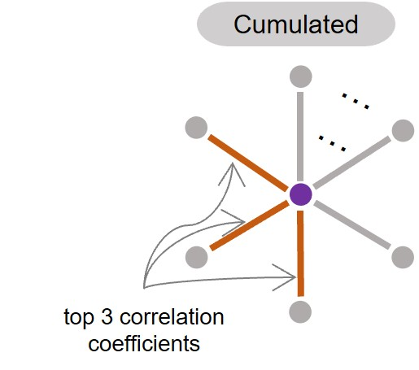

Concept#
We introduce the computational implementation of co-evolutionary strengths/constraints quantification for individual residues. You may find it interesting for engineering this feature per residue. If you have a correlation matrix for any kind of biological interaction system, you may apply this idea to it.
Definition of cumuCCs#
Cumulated correlation coefficients (cumuCCs) are used to quantify co-evolutionary strength for individual residues, which is first brought to our eyes by Marks’ team[1]. It is different from globRRCs and LocRRCs for pairwise residues in biological networks.
Hint
how to calculate it? For a single residue, the cumuCCs of its k prioritized connections with other residue can reflect its biological importance in a network. In evolutionary biology, the sum of the highest evolutionary coupling scores of a residue can help evaluate the extent to which the residue bears evolutionary constraints. This has been used as an important feature to gauge whether a residue is an interaction site in transmembrane proteins[2]&[3].
Illustration#
It is not problematic to generate cumuCCs at a fast speed for input proteins of any length. It is calculated as
where CC_R stands for the sum of correlation coefficients of k prioritized connections of a residue with other residues according to ranked correlation coefficients in descending order and c is the sum of the correlation matrix over all residues.
{kind=link}